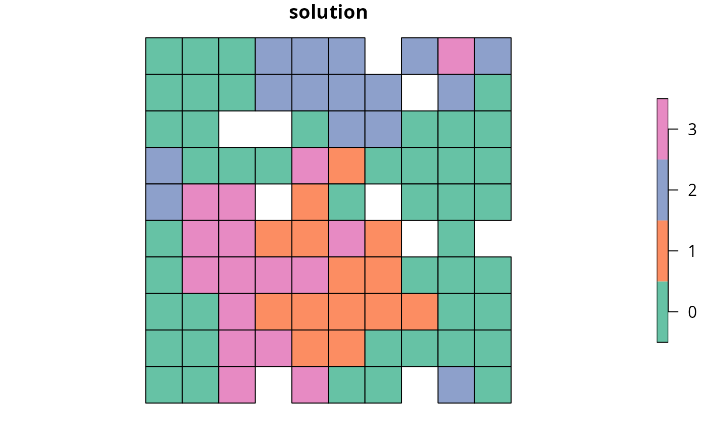

Solve a conservation planning problem.
Arguments
| a |
|
|---|---|
| b |
|
| ... | arguments passed to |
Value
A numeric, matrix,
RasterLayer-class, or
Spatial-class object containing the solution to
the problem. Additionally, the returned object will have the following
additional attributes: "objective" containing the solution's
objective, "runtime" denoting the number of seconds that elapsed
while solving the problem, and "status" describing the
status of the solution (e.g. "OPTIMAL" indicates that the
optimal solution was found).
Details
The object returned from this function depends on the argument to
a. If the argument to a is an
OptimizationProblem-class object, then the
solution is returned as a logical vector showing the status
of each planning unit in each zone. On the other hand, if the argument
to a is an ConservationProblem-class object,
then the type of object returned depends on the number of solutions
generated and the type data used to represent planning unit costs in the
argument to a.
numericvectorcontaining the solution. Here, Each element corresponds to a different planning unit. If multiple solutions are generated, then the solution is returned as alistofnumericvectors.matrixcontaining
numericvalues for the solution. Here, rows correspond to different planning units, and fields (columns) correspond to different management zones. If multiple solutions are generated, then the solution is returned as alistofmatrixobjects.Raster-classobject containing the solution in pixel values. If the argument to
xcontains a single management zone, then aRasterLayerobject will be returned. Otherwise, if the argument toxcontains multiple zones, then aRasterStack-classobject will be returned containing a different layer for each management zone. If multiple solutions are generated, then the solution is returned as alistofRasterobjects.Spatial-classordata.framecontaining the solution in fields (columns). Here, each row corresponds to a different planning unit. If the argument to
xcontains a single zone, the fields containing solutions are named"solution_XXX"where"XXX"corresponds to the solution number. If the argument toxcontains multiple zones, the fields containing solutions are named"solution_XXX_YYY"where"XXX"corresponds to the solution and"YYY"is the name of the management zone.
Since this function returns an object that specifies how much of each
planning unit is allocated to each management zone, it may be useful to use
the category_layer function to reformat the output
for problems containing multiple zones.
See also
Examples
# set seed for reproducibility set.seed(500) # load data data(sim_pu_raster, sim_pu_polygons, sim_features, sim_pu_zones_stack, sim_pu_zones_polygons, sim_features_zones) # build minimal conservation problem with raster data p1 <- problem(sim_pu_raster, sim_features) %>% add_min_set_objective() %>% add_relative_targets(0.1) %>% add_binary_decisions()# solve the problem s1 <- solve(p1)#> Optimize a model with 5 rows, 90 columns and 450 nonzeros #> Variable types: 0 continuous, 90 integer (90 binary) #> Coefficient statistics: #> Matrix range [2e-01, 9e-01] #> Objective range [2e+02, 2e+02] #> Bounds range [1e+00, 1e+00] #> RHS range [3e+00, 9e+00] #> Found heuristic solution: objective 2734.3392638 #> Presolve time: 0.00s #> Presolved: 5 rows, 90 columns, 450 nonzeros #> Variable types: 0 continuous, 90 integer (90 binary) #> Presolved: 5 rows, 90 columns, 450 nonzeros #> #> #> Root relaxation: objective 1.959092e+03, 11 iterations, 0.00 seconds #> #> Nodes | Current Node | Objective Bounds | Work #> Expl Unexpl | Obj Depth IntInf | Incumbent BestBd Gap | It/Node Time #> #> 0 0 1959.09190 0 5 2734.33926 1959.09190 28.4% - 0s #> H 0 0 2010.9158175 1959.09190 2.58% - 0s #> #> Explored 1 nodes (11 simplex iterations) in 0.00 seconds #> Thread count was 1 (of 16 available processors) #> #> Solution count 2: 2010.92 2734.34 #> #> Optimal solution found (tolerance 1.00e-01) #> Best objective 2.010915817515e+03, best bound 1.959091904791e+03, gap 2.5771%#> class : RasterLayer #> dimensions : 10, 10, 100 (nrow, ncol, ncell) #> resolution : 0.1, 0.1 (x, y) #> extent : 0, 1, 0, 1 (xmin, xmax, ymin, ymax) #> coord. ref. : NA #> data source : in memory #> names : layer #> values : 0, 1 (min, max) #># print attributes describing the optimization process and the solution print(attr(s1, "objective"))#> solution_1 #> 2010.916#> solution_1 #> 0.001797915#> solution_1 #> "OPTIMAL"#> # A tibble: 5 x 3 #> feature absolute_held relative_held #> <chr> <dbl> <dbl> #> 1 layer.1 9.02 0.104 #> 2 layer.2 5.72 0.104 #> 3 layer.3 7.28 0.101 #> 4 layer.4 7.07 0.100 #> 5 layer.5 3.06 0.101# build minimal conservation problem with spatial polygon data p2 <- problem(sim_pu_polygons, sim_features, cost_column = "cost") %>% add_min_set_objective() %>% add_relative_targets(0.1) %>% add_binary_decisions()# solve the problem s2 <- solve(p2)#> Optimize a model with 5 rows, 90 columns and 450 nonzeros #> Variable types: 0 continuous, 90 integer (90 binary) #> Coefficient statistics: #> Matrix range [2e-01, 9e-01] #> Objective range [2e+02, 2e+02] #> Bounds range [1e+00, 1e+00] #> RHS range [3e+00, 8e+00] #> Found heuristic solution: objective 2341.4054836 #> Presolve time: 0.00s #> Presolved: 5 rows, 90 columns, 450 nonzeros #> Variable types: 0 continuous, 90 integer (90 binary) #> Presolved: 5 rows, 90 columns, 450 nonzeros #> #> #> Root relaxation: objective 1.759828e+03, 15 iterations, 0.00 seconds #> #> Nodes | Current Node | Objective Bounds | Work #> Expl Unexpl | Obj Depth IntInf | Incumbent BestBd Gap | It/Node Time #> #> 0 0 1759.82778 0 5 2341.40548 1759.82778 24.8% - 0s #> H 0 0 1800.8047288 1759.82778 2.28% - 0s #> #> Explored 1 nodes (15 simplex iterations) in 0.00 seconds #> Thread count was 1 (of 16 available processors) #> #> Solution count 2: 1800.8 2341.41 #> #> Optimal solution found (tolerance 1.00e-01) #> Best objective 1.800804728801e+03, best bound 1.759827783273e+03, gap 2.2755%#> cost locked_in locked_out solution_1 #> 1 215.8638 FALSE FALSE 0 #> 2 212.7823 FALSE FALSE 0 #> 3 207.4962 FALSE FALSE 0 #> 4 208.9322 FALSE FALSE 0 #> 5 214.0419 FALSE FALSE 0 #> 6 213.7636 FALSE FALSE 0# calculate feature representation in the solution r2 <- feature_representation(p2, s2[, "solution_1"]) print(r2)#> # A tibble: 5 x 3 #> feature absolute_held relative_held #> <chr> <dbl> <dbl> #> 1 layer.1 8.14 0.105 #> 2 layer.2 5.16 0.104 #> 3 layer.3 6.56 0.101 #> 4 layer.4 6.30 0.100 #> 5 layer.5 2.74 0.101# plot solution spplot(s2, zcol = "solution_1", main = "solution", axes = FALSE, box = FALSE)# build multi-zone conservation problem with raster data p3 <- problem(sim_pu_zones_stack, sim_features_zones) %>% add_min_set_objective() %>% add_relative_targets(matrix(runif(15, 0.1, 0.2), nrow = 5, ncol = 3)) %>% add_binary_decisions()# solve the problem s3 <- solve(p3)#> Optimize a model with 105 rows, 270 columns and 1620 nonzeros #> Variable types: 0 continuous, 270 integer (270 binary) #> Coefficient statistics: #> Matrix range [2e-01, 1e+00] #> Objective range [2e+02, 2e+02] #> Bounds range [1e+00, 1e+00] #> RHS range [1e+00, 2e+01] #> Found heuristic solution: objective 11939.082206 #> Presolve removed 5 rows and 0 columns #> Presolve time: 0.00s #> Presolved: 100 rows, 270 columns, 1170 nonzeros #> Variable types: 0 continuous, 270 integer (270 binary) #> Presolved: 100 rows, 270 columns, 1170 nonzeros #> #> #> Root relaxation: objective 1.056173e+04, 118 iterations, 0.00 seconds #> #> Nodes | Current Node | Objective Bounds | Work #> Expl Unexpl | Obj Depth IntInf | Incumbent BestBd Gap | It/Node Time #> #> 0 0 10561.7313 0 10 11939.0822 10561.7313 11.5% - 0s #> H 0 0 10717.412715 10561.7313 1.45% - 0s #> #> Explored 1 nodes (118 simplex iterations) in 0.01 seconds #> Thread count was 1 (of 16 available processors) #> #> Solution count 2: 10717.4 11939.1 #> #> Optimal solution found (tolerance 1.00e-01) #> Best objective 1.071741271480e+04, best bound 1.056173129324e+04, gap 1.4526%#> class : RasterStack #> dimensions : 10, 10, 100, 3 (nrow, ncol, ncell, nlayers) #> resolution : 0.1, 0.1 (x, y) #> extent : 0, 1, 0, 1 (xmin, xmax, ymin, ymax) #> coord. ref. : NA #> names : layer.1.1, layer.1.2, layer.1.3 #> min values : 0, 0, 0 #> max values : 1, 1, 1 #>#> # A tibble: 15 x 4 #> feature zone absolute_held relative_held #> <chr> <chr> <dbl> <dbl> #> 1 feature_1 zone_1 16.8 0.194 #> 2 feature_2 zone_1 11.0 0.201 #> 3 feature_3 zone_1 14.2 0.198 #> 4 feature_4 zone_1 11.6 0.165 #> 5 feature_5 zone_1 5.49 0.181 #> 6 feature_1 zone_2 15.4 0.178 #> 7 feature_2 zone_2 10.1 0.185 #> 8 feature_3 zone_2 13.9 0.193 #> 9 feature_4 zone_2 13.4 0.189 #> 10 feature_5 zone_2 5.30 0.175 #> 11 feature_1 zone_3 13.8 0.160 #> 12 feature_2 zone_3 10.4 0.190 #> 13 feature_3 zone_3 13.2 0.184 #> 14 feature_4 zone_3 11.7 0.165 #> 15 feature_5 zone_3 5.32 0.176# build multi-zone conservation problem with spatial polygon data p4 <- problem(sim_pu_zones_polygons, sim_features_zones, cost_column = c("cost_1", "cost_2", "cost_3")) %>% add_min_set_objective() %>% add_relative_targets(matrix(runif(15, 0.1, 0.2), nrow = 5, ncol = 3)) %>% add_binary_decisions()# solve the problem s4 <- solve(p4)#> Optimize a model with 105 rows, 270 columns and 1620 nonzeros #> Variable types: 0 continuous, 270 integer (270 binary) #> Coefficient statistics: #> Matrix range [2e-01, 1e+00] #> Objective range [2e+02, 2e+02] #> Bounds range [1e+00, 1e+00] #> RHS range [1e+00, 1e+01] #> Found heuristic solution: objective 10142.893739 #> Presolve removed 7 rows and 0 columns #> Presolve time: 0.00s #> Presolved: 98 rows, 270 columns, 990 nonzeros #> Variable types: 0 continuous, 270 integer (270 binary) #> Presolved: 98 rows, 270 columns, 990 nonzeros #> #> #> Root relaxation: objective 8.757501e+03, 64 iterations, 0.00 seconds #> #> Nodes | Current Node | Objective Bounds | Work #> Expl Unexpl | Obj Depth IntInf | Incumbent BestBd Gap | It/Node Time #> #> 0 0 8757.50081 0 9 10142.8937 8757.50081 13.7% - 0s #> H 0 0 8987.4195297 8757.50081 2.56% - 0s #> #> Explored 1 nodes (64 simplex iterations) in 0.00 seconds #> Thread count was 1 (of 16 available processors) #> #> Solution count 2: 8987.42 10142.9 #> #> Optimal solution found (tolerance 1.00e-01) #> Best objective 8.987419529708e+03, best bound 8.757500808059e+03, gap 2.5582%#> cost_1 cost_2 cost_3 locked_1 locked_2 locked_3 solution_1_zone_1 #> 1 215.8638 192.3884 198.4662 FALSE FALSE FALSE 0 #> 2 212.7823 191.0935 198.9805 FALSE FALSE FALSE 0 #> 3 207.4962 192.6250 199.7701 FALSE FALSE FALSE 1 #> 4 208.9322 193.7624 194.9124 FALSE FALSE FALSE 0 #> 5 214.0419 195.4206 199.0329 FALSE FALSE FALSE 0 #> 6 213.7636 195.8731 201.0514 FALSE FALSE FALSE 0 #> solution_1_zone_2 solution_1_zone_3 #> 1 1 0 #> 2 1 0 #> 3 0 0 #> 4 0 1 #> 5 0 0 #> 6 0 0# calculate feature representation in the solution r4 <- feature_representation(p4, s4[, c("solution_1_zone_1", "solution_1_zone_2", "solution_1_zone_3")]) print(r4)#> # A tibble: 15 x 4 #> feature zone absolute_held relative_held #> <chr> <chr> <dbl> <dbl> #> 1 feature_1 zone_1 12.2 0.157 #> 2 feature_2 zone_1 7.82 0.158 #> 3 feature_3 zone_1 10.5 0.162 #> 4 feature_4 zone_1 10.2 0.161 #> 5 feature_5 zone_1 4.19 0.154 #> 6 feature_1 zone_2 12.1 0.156 #> 7 feature_2 zone_2 8.96 0.182 #> 8 feature_3 zone_2 11.0 0.171 #> 9 feature_4 zone_2 10.4 0.165 #> 10 feature_5 zone_2 4.59 0.169 #> 11 feature_1 zone_3 14.1 0.182 #> 12 feature_2 zone_3 9.17 0.186 #> 13 feature_3 zone_3 12.3 0.190 #> 14 feature_4 zone_3 11.1 0.176 #> 15 feature_5 zone_3 4.73 0.173# create new column representing the zone id that each planning unit # was allocated to in the solution s4$solution <- category_vector(s4@data[, c("solution_1_zone_1", "solution_1_zone_2", "solution_1_zone_3")]) s4$solution <- factor(s4$solution) # plot solution spplot(s4, zcol = "solution", main = "solution", axes = FALSE, box = FALSE)